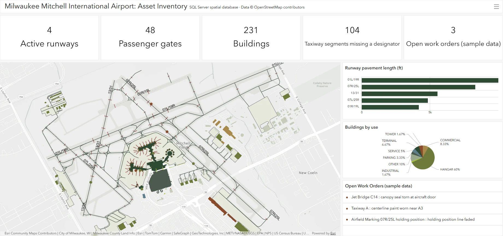
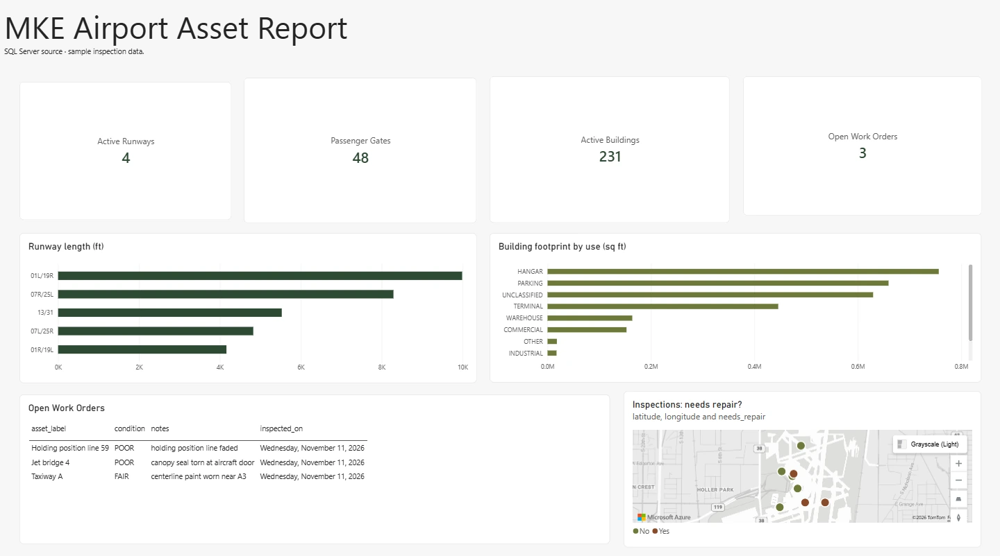

MKE Airport Asset Database
A SQL Server spatial database of Milwaukee Mitchell International Airport's runways, taxiways, aprons, buildings and gates, built from public data, checked for quality, corrected against air traffic control, and published as a live dashboard with a field inspection workflow.

594 airport features in a database that checks itself
Seven feature tables, an inspection table, five lookup tables and four reporting views, loaded and verified on SQL Server 2022.
| Table | Geometry | Features |
|---|---|---|
| Runway segments (5 runways: pavement, displaced thresholds, stopways) | Line | 15 |
| Taxiway segments | Line | 145 |
| Aprons | Polygon | 19 |
| Buildings (terminals, hangars, tower, parking and others) | Polygon | 232 |
| Passenger gates | Point | 48 |
| Airfield markings (holding positions, parking lead-in lines) | Line | 102 |
| Jet bridges | Line | 33 |
Airports run on asset data: what exists, where it is, what state it is in. I wanted to build a small, honest version of that system from scratch, the way a GIS database administrator would: design the tables, enforce valid values in the database itself, load real data, test it, and put the results in front of people.
Everything here comes from public data. It is my own database, not the airport's, and it leaves out anything security-sensitive.
- Source data. Pulled every aeroway and building feature inside the airport boundary from OpenStreetMap through the Overpass API.
- Database design. One table per asset type, each with a single geometry type in WGS 84. Lookup tables hold the valid values for status, building use, runway segment type and inspection condition, and foreign keys enforce them.
- Rules in the database. CHECK constraints reject the wrong geometry type, the wrong coordinate system, invalid shapes, and zero or negative lengths and areas. Every feature table has a spatial index.
- Views and roles. Three views summarize runways, asset counts and building footprints for reporting. A read-only role and an editor role control access.
- Checks. A script reports row counts, runway lengths, invalid geometry, missing attributes, and a spatial check for gates near terminals that are no longer active.
- Map and dashboard. Connected ArcGIS Pro to SQL Server, symbolized the layers, published to ArcGIS Online and built the dashboard.
The source data marked two of the airport's five runways, 01R/19L and 07L/25R, as abandoned, so my first dashboard showed three active runways. That did not match other public sources, which disagreed with each other.
I asked an air traffic controller at the airport. The answer: 07L/25R is open. 01R/19L is permanently closed and slated for removal. Four runways are active, not three.
I corrected my database with a short SQL script, run inside a transaction, that updates the status and records where the correction came from:
BEGIN TRANSACTION;
UPDATE airport.runway SET status = 'ACTIVE'
WHERE designator = '07L/25R' AND status <> 'ACTIVE';
INSERT airport.data_source (source_name, license, retrieved_on, notes)
VALUES (N'Airport operations (air traffic control), personal communication',
N'Not applicable', '2026-11-10',
N'Runway status correction: 07L/25R is open; 01R/19L is permanently closed.');
COMMIT TRANSACTION;
Then I republished the layer, and the dashboard's count changed from 3 to 4. The rebuild script applies the correction automatically, so reloading the source data cannot undo it.
Asset systems such as Cityworks tie inspections and repairs to features on the map. I built a small version of that loop, with sample data, to show how the pieces connect.
- Field form. An ArcGIS Survey123 form records the asset, its condition, whether it needs repair, notes, a photo and a point on the map.
- Dashboard. Inspections appear on the map as they are submitted. Those marked "needs repair" are counted and listed as open work orders.
- Back to the database. A SQL script loads the survey export into the inspection table and matches each record to its asset: gates by number, runways and taxiways by designator, buildings by name. Where several segments share a designator, it takes the one nearest the inspector's point.
- Spatial matching. Jet bridges have no names, so the script finds the bridge nearest the named gate. A faded holding-position line is matched to the nearest marking of that type.
All eight sample inspections matched an asset, and three became open work orders. Each survey record loads only once, so the script can be re-run after every export.
Sample data: the conditions are invented, not real inspection results.
The same database also feeds a one-page Power BI report. Power BI connects to SQL Server and reads the reporting views directly, so the counts, runway lengths, building footprints and open work orders come from the same queries the dashboard uses.


The four cards are DAX measures. The map plots each inspection from the point recorded in the field form.
Built in Power BI Desktop · sample inspection data · click the image to enlarge
- Runway lengths match published figures. Geodesic lengths computed from the geometry: 01L/19R at 9,991 ft, 07R/25L at 8,292 ft and 13/31 at 5,531 ft, each within 10 ft of the published length.
- Ten gates are still mapped at a demolished concourse. Gates E60 to E69 sit at Concourse E, which the source marks as demolished. A spatial query flags them for review.
- 104 of 145 taxiway segments have no designator. The dashboard shows this number on purpose, as a data-quality indicator.
- 171 buildings have no recorded use. They are kept and labelled Unclassified instead of guessed at.
- No invalid geometry in any table.
- The data is OpenStreetMap's, mapped by volunteers. It is not the airport's own record and should not be used for navigation or operations.
- This is a SQL Server spatial database read by ArcGIS Pro through a database connection. It is not an Esri enterprise geodatabase, which needs an ArcGIS Server license.
- The inspections are sample data. I have not inspected the airfield, and the conditions shown are invented to demonstrate the workflow.
Where the data came from
Everything on this page reads from one SQL Server database: the dashboard, the Power BI report and the inspection loop all use the same tables and views.
Drawn with Mermaid. The diagram's source is data_flow.mmd in the site's repository.
- SQL Server 2022
- T-SQL
- Spatial indexes
- ArcGIS Pro 3.7
- ArcGIS Online
- ArcGIS Dashboards
- ArcGIS Survey123
- Power BI
- DAX
- Python
- Overpass API
Data © OpenStreetMap contributors, Open Database License